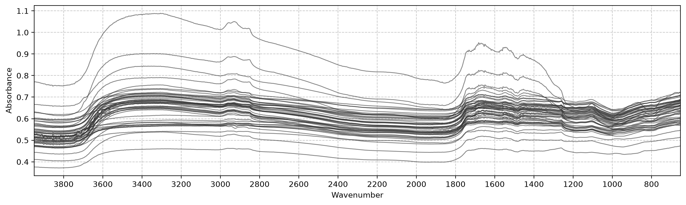

from soilspectfm.all import *data
Load MIR spectra and δ13C measurements of cassava leaves
This module reads the two raw files and aligns them into arrays ready for soilspectfm transforms and scikit-learn estimators. The data isn’t part of the repo, so every loader takes the file location as an argument.
Spectra
load_spectra
def load_spectra(
fname, # CSV with one row per wavenumber and one column per sample
):Read MIR absorbance spectra as (X, ws, ids), with one row of X per sample
Exported source
def load_spectra(
fname, # CSV with one row per wavenumber and one column per sample
):
"Read MIR absorbance spectra as `(X, ws, ids)`, with one row of `X` per sample"
df = pd.read_csv(fname, index_col=0)
return df.values.T, df.index.values, df.columns.to_numpy(str)The spectra file stores one wavenumber per row and one sample per column. scikit-learn expects one sample per row, so load_spectra transposes it. The wavenumbers ws (cm⁻¹, ascending) are returned separately, because soilspectfm transforms such as Trim and Resample take them as a parameter.
X, ws, ids = load_spectra('../data/specs_trim.csv')
test_eq(X.shape, (len(ids), len(ws)))
X.shape, ws[[0, -1]], ids[:3]((1184, 1711),
array([ 651.8218, 3949.5 ]),
array(['1456_001', '1456_002', '1456_003'], dtype='<U31'))δ13C
load_c13
def load_c13(
fname, # CSV of sample ids and their δ13C (‰)
)->pandas.Series:Read δ13C values as a Series indexed by sample id
Exported source
def load_c13(
fname, # CSV of sample ids and their δ13C (‰)
) -> pd.Series:
"Read δ13C values as a `Series` indexed by sample id"
return pd.read_csv(fname, index_col=0).iloc[:, 0].rename('c13')c13 = load_c13('../data/all_batches_wet_chem.csv')
c13.describe()count 1291.000000
mean -26.917553
std 1.952382
min -30.930046
25% -28.440766
50% -26.995435
75% -25.793860
max -21.227139
Name: c13, dtype: float64Batches
Sample ids have the form <batch>_<sample>. Each batch is a set of cassava plants grown under its own conditions and scanned at its own time, on the same spectrometer. Batch is the grouping variable for validation.
batch_of
def batch_of(
ids, # Sample ids of the form `<batch>_<sample>`
)->numpy.ndarray:Batch of each sample id
Exported source
def batch_of(
ids, # Sample ids of the form `<batch>_<sample>`
) -> np.ndarray:
"Batch of each sample id"
return np.array([o.split('_')[0] for o in ids])test_eq(batch_of(['1456_001', '1722_180']), ['1456', '1722'])Aligned dataset
load_data
def load_data(
path:str='data', # Folder holding both files
spectra:str='specs_trim.csv', # Spectra file name
c13:str='all_batches_wet_chem.csv', # δ13C file name
)->fastcore.basics.AttrDict:Spectra and δ13C of the samples present in both files
Exported source
def load_data(
path='data', # Folder holding both files
spectra='specs_trim.csv', # Spectra file name
c13='all_batches_wet_chem.csv', # δ13C file name
) -> AttrDict:
"Spectra and δ13C of the samples present in both files"
path = Path(path)
X, ws, ids = load_spectra(path/spectra)
y = load_c13(path/c13)
keep = np.isin(ids, y.index)
return AttrDict(X=X[keep], ws=ws, y=y[ids[keep]].values, ids=ids[keep], batch=batch_of(ids[keep]))load_data returns an AttrDict of numpy arrays. All of them are aligned by sample, except ws, which has one entry per wavenumber:
X: absorbance, one row per samplews: wavenumbers (cm⁻¹, ascending)y: δ13C (‰)ids: sample idsbatch: batch of each sample
Only samples with both a spectrum and a δ13C value are kept: 26 spectra have no δ13C value, and 133 δ13C values have no spectrum.
d = load_data('../data')
test_eq(d.y, c13[d.ids].values)
d.X.shape, len(np.setdiff1d(ids, d.ids)), len(np.setdiff1d(c13.index, d.ids))((1158, 1711), 26, 133)Samples per batch:
pd.Series(d.batch).value_counts().sort_index()1456 149
1586 168
1592 244
1597 97
1678 144
1722 177
1723 179
Name: count, dtype: int64A random sample of the spectra:
plot_spectra(d.X, d.ws, sample=50, ascending=False, figsize=(15, 4));